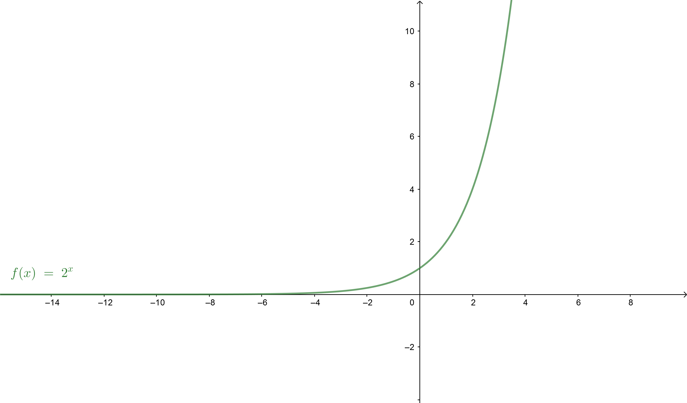
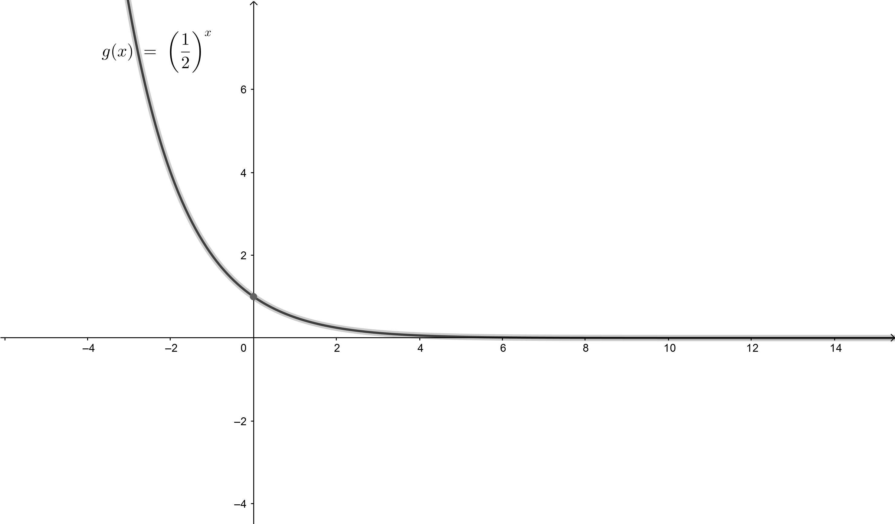
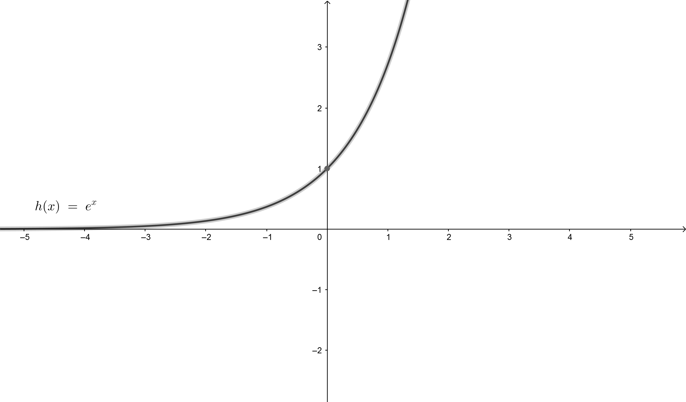

Eksponencijalna funkcija je jedna od najvažnijih funkcija u matematici. Ona je oblika $f:\mathbb{R} \rightarrow \mathbb{R}, f(x)=a^{x}$, za neki fiksirani pozitivan realan broj $a$ različit od $1$.
Funkcija je svuda definisana tj. $x \in \mathbb{R}$. Za $x=0$ imamo $a^{0}=1$ pa funkcija seče $y$-osu u tački $(0,1)$. Ako je $a>0$, $f(x)$ je rastuća, a ako je $0< a <1$ funkcija je opadajuća.
Na sledećem Geogebra apletu možemo da vidimo izgled grafika za različitu osnovu.
Osnovne osobine: $a$-osnova,$x$-izložilac.
Neka je $a,b>0$, $x,y \in \mathbb{R}$, tada:
$a^{0}=1$
$a^{1}=a$
$a^{x+y}=a^{x} \cdot a^{y}$
$a^{x-y}=\dfrac{a^{x}}{a^{y}} $
$(a^{x})^{y}=a^{xy}$
$(ab)^{x}=a^{x} \cdot b^{x}$
$(\dfrac{a}{b} )^{x}=\dfrac{a^{x}}{b^{x}} $
$a^{-x}=(\dfrac{1}{a})^{x} $
$a^{\dfrac{1}{n}}= \sqrt[n]{a}$
Na sledećim slikama data su dva primera grafika eksponencijalne funkcije kad je osnova veća od 1, i kad je osnova manja od 1.
$y=2^{x}$
$y=(\dfrac{1}{2})^{x}$
Eksponencijalna funkcija se koristi pri opisivanju velikog broja realnih pojava. Na primer, prirodno se pojavljuje u situacijama kada se neka veličina povećava ili smanjuje isti broj puta u jedinici vremena. Primeri su rast populacije, prirast biomase,…
Prirodna eksponencijalna funkcija je eksponencijalna funkcija sa osnovom e, gde je e=2,718281828…- Ojlerova konstanta. Na sledećoj slici dat je grafik funkcije $e^{x}$.
